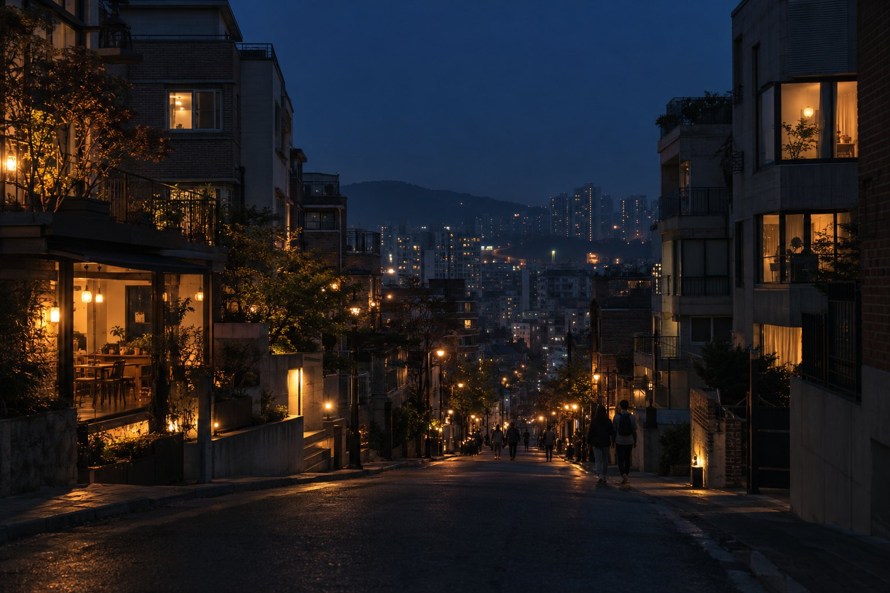
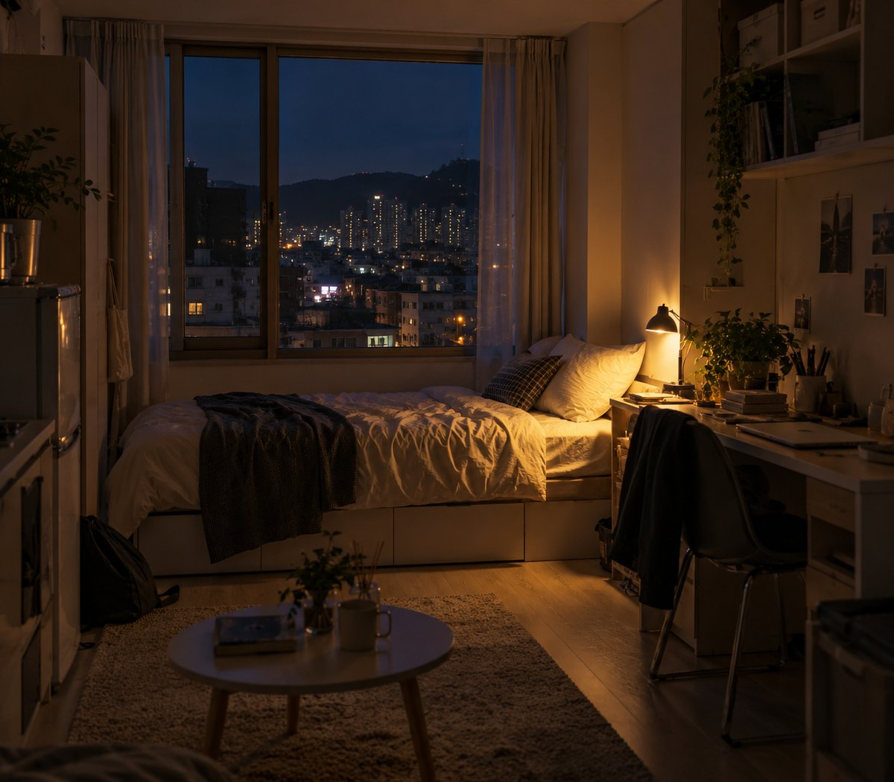
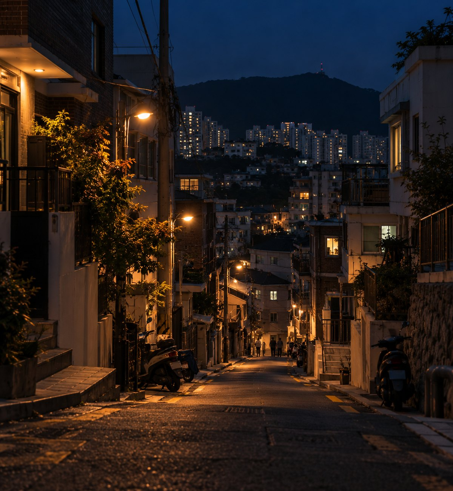
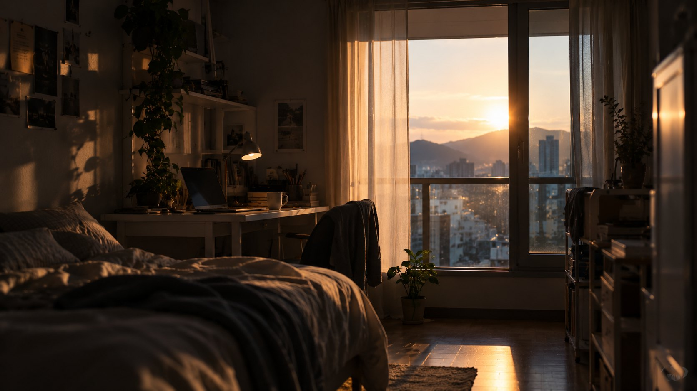

assets/img/01_cover.jpg부산대 앞에서
자취할까, 통학할까
정문 · 북문 · 부산대역 월세와 부산 전역 통학비용을
실거래가와 매물 호가로 비교했어요
통학생이 궁금한 두 가지

assets/img/02_card_home.jpg정문 · 북문 · 부산대역
어디가 가장 저렴할까?
부산 어디까지는 통학이,
어디부터는 자취가 이득일까?
호가와 실거래, 두 가지 데이터를 겹쳐 봤어요
다방 107 · 직방 109 · 피터팬 222, 플랫폼 간 중복 34쌍 제거
부산 16개 구군 · 전용 33㎡ 이하 · 2023.01 ~ 2026.10
호가는 시장이 요구하는 가격, 실거래는 실제로 체결된 가격이에요.
월세만 보면 놓치는 것
= 월세 + 보증금 × 연 5.5% ÷ 12 + 관리비
권역은 정문 · 북문 · 부산대역 중 가장 가까운 곳에서 반경 700m 이내예요.
이율은 4.5% / 5.5% / 7.0%로 바꿔 보며 결론이 변하는지 확인했어요.
부산대 앞 세 곳을 비교했어요

assets/img/05_gate_north.jpg각 앵커에서 반경 700m 안의 월세 매물 231건
사진은 분위기를 위한 AI 생성 이미지예요
월세는 정문이 제일 쌌어요
월 실질 주거비 중위값 37.4만원. 선은 95% 신뢰구간이고 가장 비싼 부산대역과 월 5.4만원 차이예요.
다만 정문과 북문의 차이는 통계적으로 확실하지 않아요.
권역 차이보다 방의 크기가 더 커요
| 비교 | 중위값 차이 | p (Holm) |
|---|---|---|
| 정문 vs 북문 | -1.4만 | 0.607 |
| 정문 vs 부산대역 | -5.4만 | 0.061 |
| 북문 vs 부산대역 | -4.0만 | 0.028 |
유의한 쌍: 북문 vs 부산대역 (p < 0.05)
층당 +1.41만원. 권역·층·플랫폼을 통제한 회귀 결과예요.
비슷한 방끼리 비교하면 호가가 실거래보다 평균 13% 낮아요
호가 ÷ 실거래 − 1: 부곡동 -14% · 온천동 -18% · 장전동 -7% (12~28㎡ 다세대·다가구 기준). 지번이 가려져 동 단위로만 비교해요.
통학시간도 값으로 치면 영도·사하·강서부터 자취가 유리
교통비
통학시간 환산
시급 10,320원 · 자취가 유리한 구는 파랑
점선 = 정문 자취 월 주거비
월 16일 등교 기준
통학 시간은 추정값이에요.
편도 약 59분이 넘으면 자취가 이득
현금 교통비만 보면 모든 구에서 통학이 저렴해요.
갈림길은 돈이 아니라 통학 시간을 얼마로 보느냐예요.
해석할 때 기억할 다섯 가지
- 호가는 요청 가격의 한 시점 스냅샷이고, 크롤링 약관 확인이 필요해요.
- 다방 좌표는 가려져 있고, 정문·북문 앵커는 검증하지 못했어요.
- 실거래는 동 중심 좌표만 써서 동 안의 위치 차이는 보지 못해요.
- 보증금 환산 이율과 통학 시간·요금은 가정(추정)이에요.
- 자취의 식비·생활비와 통학의 피로는 포함하지 않았어요.

assets/img/12_hero_home.jpg정문이 가장 싸지만,
차이보다 중요한 건 방 크기와 통학 시간
- 권역 간 월 주거비 격차는 최대 5.4만원
- 현금만 보면 통학이 싸고, 편도 59분을 넘으면 자취가 이득
- 12~28㎡ 다세대·다가구로 맞추면 호가가 실거래보다 평균 13% 낮아요
학교와 가깝다고 꼭 비싸진 않았어요
앵커까지 거리별 월 실질 주거비 중위값. Spearman ρ = -0.05 (p = 0.33).
단순 중위값 대비 오차를 31% 줄였어요
전체 중위값 8.1만원. 가장 큰 변수는 area_m2.
동 중위값 9.0만원.
출처
- [R-01] 국토교통부 전월세 실거래가, 공공데이터포털 (data.go.kr)
- [R-02] 한국은행 경제통계시스템 ECOS — 기준금리 (이율 가정 근거, 확인 필요)
- [R-04] 부산 대중교통 요금 (공식 고시 확인 필요)
- [R-05] 2026년 최저임금 10,320원/시간 (고용노동부)
- 다방 · 직방 · 피터팬의 좋은방 구하기 매물 (수집 스냅샷)
- 디자인: Tesla 스타일 디자인 시스템 (getdesign) · 이미지: AI 생성